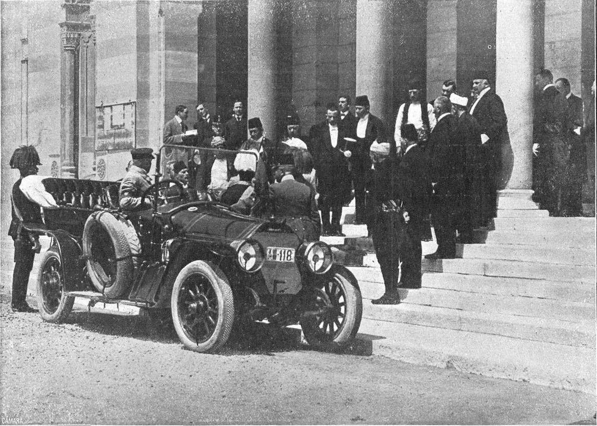

Militarism: The idea that a country needs a really strong military to achieve things.
There was a race between Germany and Great Britain to see who had a better naval military, called the Naval Race.
Alliances: Agreements between nations to help each other.
A man named Otto von Bismarck tried to make several alliances with other countries to help his country, Germany.
Most of these alliances did not work out, instead creating more problems between nations.
Nationalism: A feeling of extreme proud towards the nation you live in.
Nationalists celebrate their country and place it's interests over those of other countries.
Nationalism is fueled by wars and rivalries, influencing nationalists.
Imperialism: When one country takes over another (economically and politically).
The time between 1900 and 1914 was filled with increasing tensions between the Great Powers(Great Britain, Germany, France, Austria. and Russia)
in which the countries fought for control over Africa/Asia, known as the First Moroccan Crisis, the Second Moroccon Crisis, and the Bosnian Crisis.
Assassination: The Archduke Franz Ferdinand of Austria was assassinated June 28, 1914 on his way to a city called Sarajevo.

The group of people that killed the Archduke were from Serbia. This made Austria angered at Serbia, and they wanted to go to war.